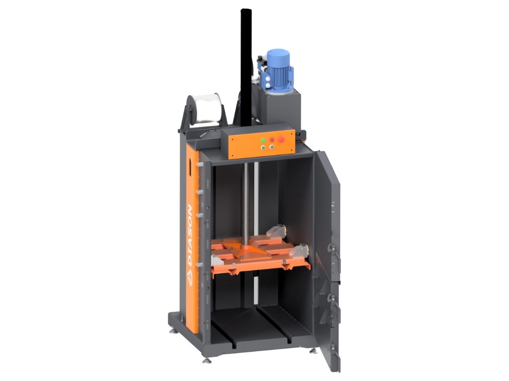
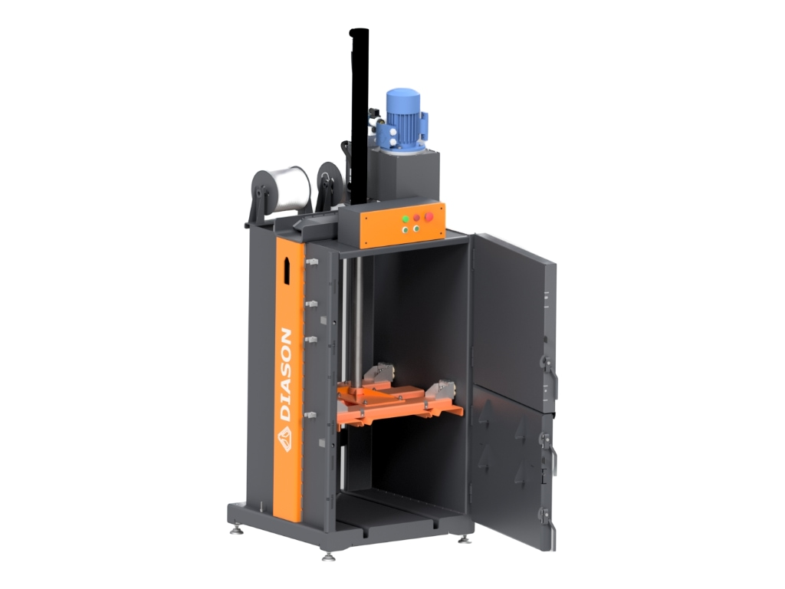
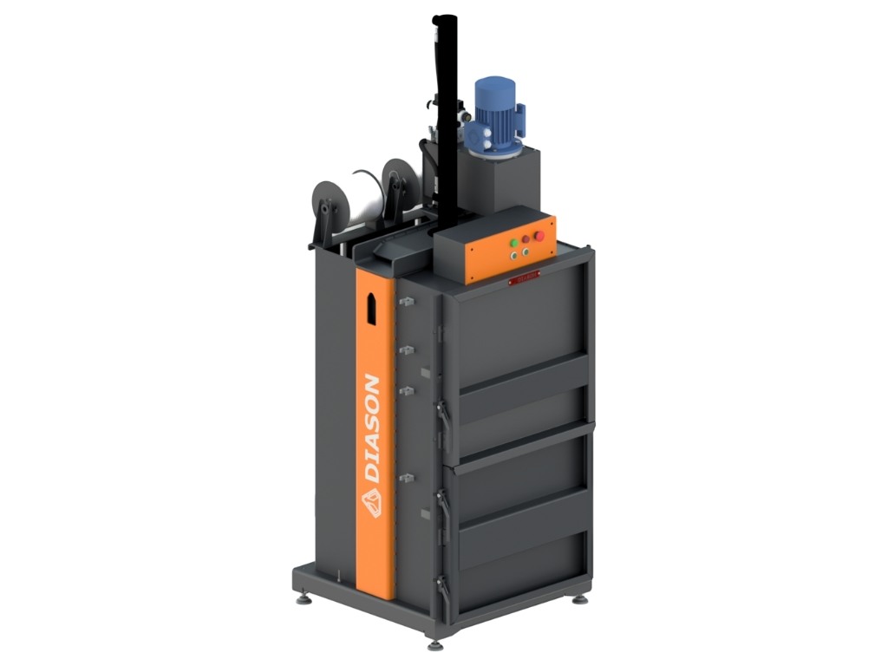
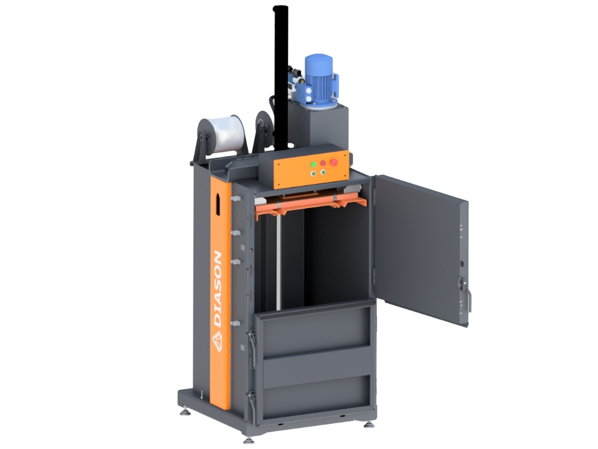

- 
- 
- 
- 
Гідравлічний прес міні
від 133 000 грн
Технічні характеристики
| Зусилля пресування | 4 т |
| Розмір вікна для завантаження | 700х470 мм |
| Розмір тюка | 675х520х690 мм |
| Вага тюка | до 50 кг (макулатура) |
| Тривалість циклу пресування | 27 секунд |
| Габарити преса | 780×2380×800 мм |
| Базова комплектація | Прес, гідроциліндри, маслостанція |
| Опціональне оснащення | Світлова / звукова індикація |
Опис гідравлічного пресу Міні
Гідравлічний прес 4 тонни – надійне рішення для стиснення вторинної сировини
Гідравлічний прес потужністю 4 тонни – це ефективне обладнання для підприємств, що займаються переробкою вторинної сировини. Завдяки високому зусиллю пресування та компактним розмірам, він дозволяє значно зменшити об'єм відходів, оптимізувати логістику та знизити витрати на зберігання і транспортування.
Технічні характеристики
- Зусилля преса: 4000 кг
- Розміри завантажувального вікна: 700х470 мм
- Габарити преса: 780х2380х800 мм
- Розмір кіпи: 675х520х690 мм
- Вага пресу: 355 кг
- Тип керування: Гідростанція 380В/220В
- Споживана потужність: До 1,5 кВт
- Матеріал виготовлення: Профільований метал
- Рівень шуму: >80 дБ
- Посилена рама: Так
- Клас захисту: IP 54
- Матеріал для обв’язки: Поліпропіленова стрічка/мотузка
- Пульт керування: Стаціонарний
Основні переваги преса на 4 тонни
- Компактні розміри – займає мінімальну площу.
- Висока ефективність – швидке пресування великих обсягів сировини.
- Легкість експлуатації – інтуїтивне керування без необхідності спеціальних навичок.
- Двократний запас міцності – висока надійність конструкції.
- Високий рівень безпеки – багаторівнева система запобіжних механізмів.
- Мінімальне технічне обслуговування – лише змащення та заміна масла раз на 2-3 роки.
- Захищена електроніка – герметична шафа керування (IP54).
- Простота установки – підключається до мережі без додаткового монтажу.
Які матеріали можна пресувати?
Гідравлічний прес потужністю 4 тонни підходить для стискання різних видів вторинної сировини, таких як:
- Картон та папір.
- Одяг та текстиль.
- Поліетиленова плівка.
- Пластикова упаковка.
Економія на логістиці
Завдяки високій щільності пресування, кількість необхідних транспортних перевезень зменшується майже втричі. Це значно скорочує витрати на перевезення вторинної сировини та дозволяє ефективно використовувати складські площі.
Тривалий термін експлуатації
Прес виготовлений з міцних сертифікованих матеріалів, що гарантує довговічність обладнання. При правильному обслуговуванні він може працювати десятки років без значних витрат на ремонт.
Замовте сучасний гідравлічний прес 4 тонни уже сьогодні!

На всі вироби гарантія 12 місяців